Peel the tomatoes first. The sauce stays brighter and smoother.
Meditation · Cooking Meditation

Tomato Vegetable Pasta
Easily stored 🥡
Freezable ❄️
Reheatable 🔥
Ripe tomatoes. Soft tofu. A bright, gentle heat.
Shopping list
Check off what you already have. Amounts are for 1–2 servings.
Produce & pantry
Sauces & seasonings
Step 1
Slice 100g mushrooms. Warm them with 1g salt until the water goes. Then 5g olive oil, until golden. Set aside.
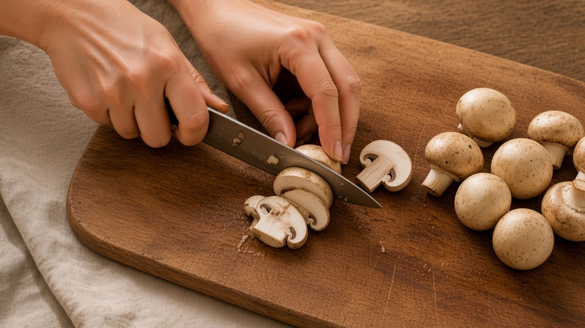
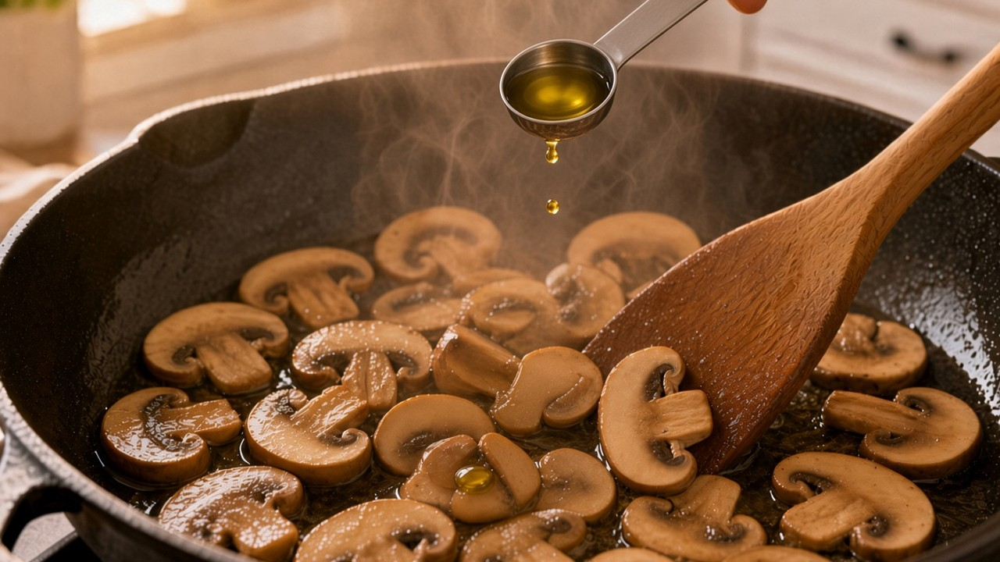
🍄100gMushrooms
⚪1gSalt
🟡5gOlive oil
Step 2
Crumble 200g firm tofu into the pan. Add 15g olive oil. Stir-fry until lightly golden, and set aside.
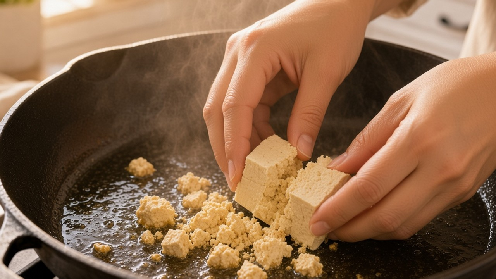
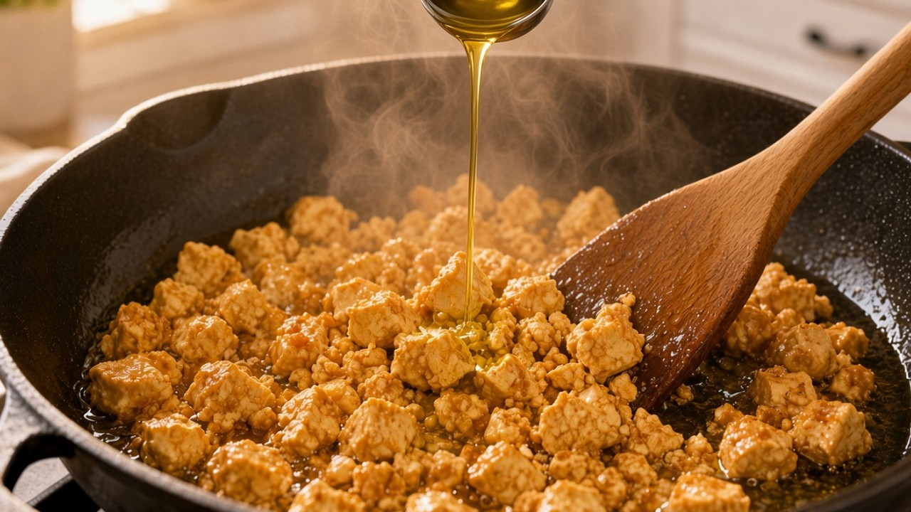
⬜200gFirm tofu
🟡15gOlive oil
Step 3
Pour 800g water into the pot. Add 5g salt and bring it to a boil. Lower 100g pasta in gently. Eight minutes on a low flame, then drain.
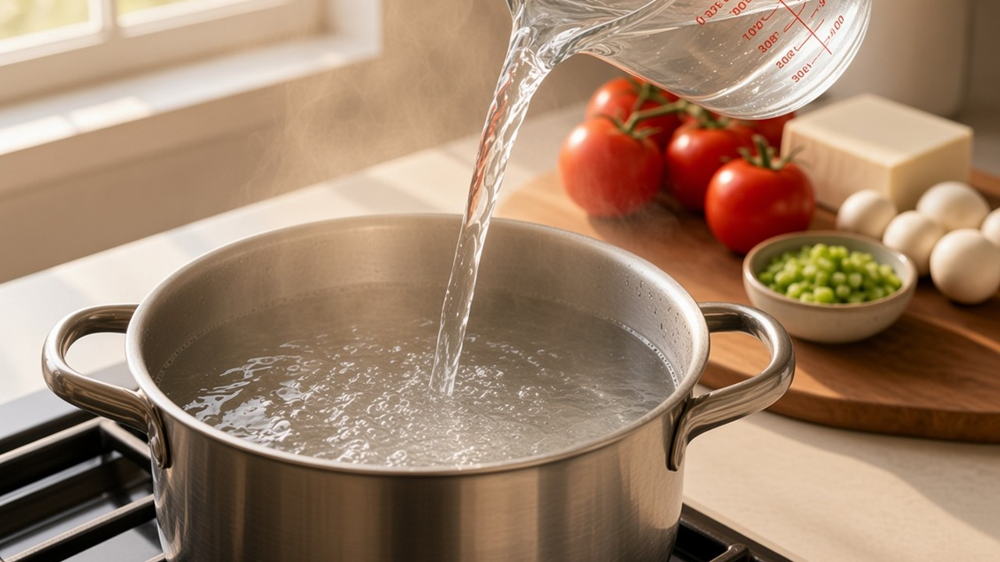
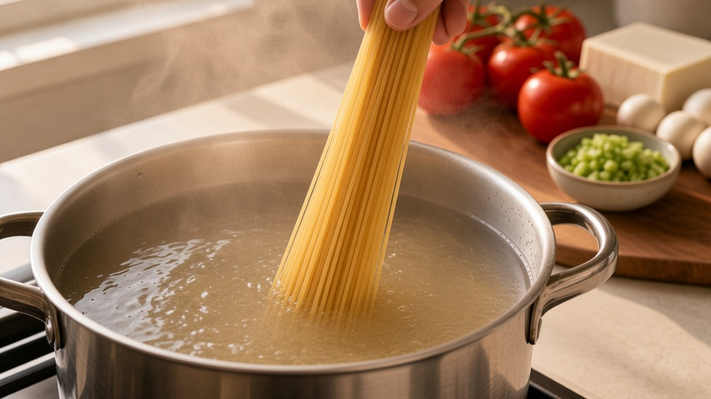
💧800gWater
⚪5gSalt
🍝100gPasta
Step 4
Peel and dice 500g tomatoes. Into the pan. A little herb mix, and rosemary. Low heat, until they release their juices.
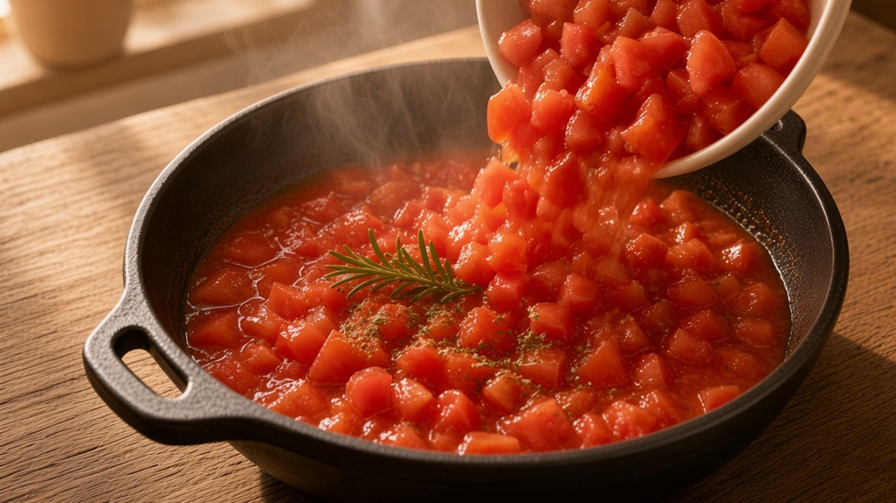
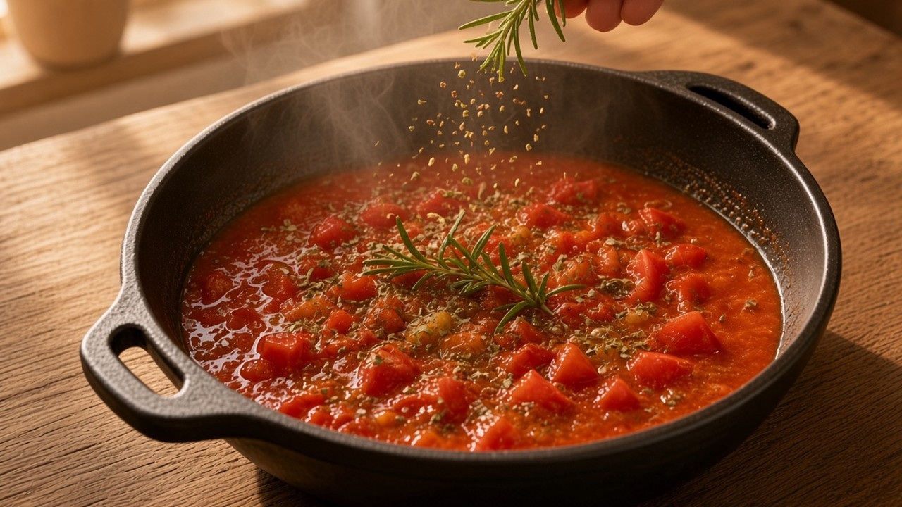
🍅500gTomatoes
🌱Herb mix
🌿Rosemary
Step 5
Season the sauce: 5g salt, 5g rock sugar, 12g seasoned soy, 15g olive oil, and a pinch of kelp powder.
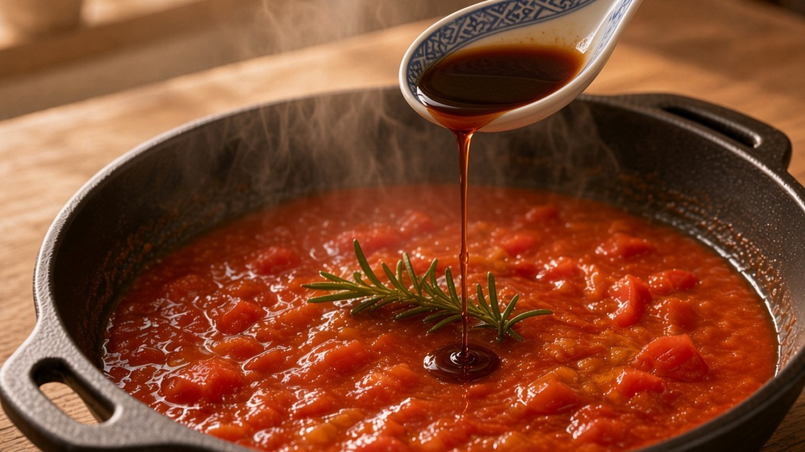
⚪5gSalt
🍬5gRock sugar
🟤12gSeasoned soy
🟡15gOlive oil
🌿Kelp powder
Step 6
Return the mushrooms and the tofu. Fold in the pasta. Finish with 40g diced celery.
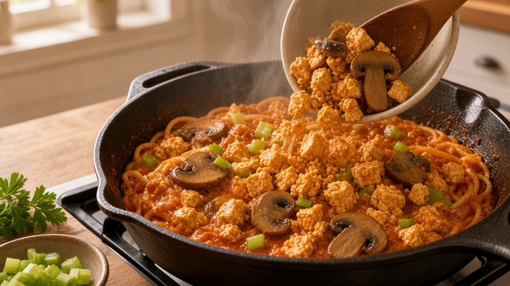
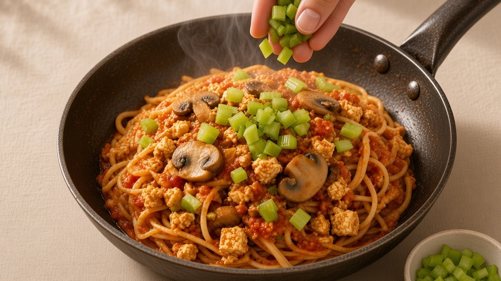

🍄100gMushrooms
⬜200gFirm tofu
🍝100gPasta
🥬40gCelery
Salt the mushrooms before the oil, so the water comes out first.
Lower the pasta in gently. No need to toss it into the water.
Keep the celery until the end, so it stays bright.
How to store it
Cool completely. Keep in an airtight container in the fridge for up to 3 days. Add a little water if it thickens.
How to freeze it
Freeze in portions for up to 1 month. Pasta will be a little softer after thawing. Keep the celery off until serving.
How to reheat it
From fridge: warm gently in a pan with a splash of water. From freezer: thaw in the fridge, then reheat the same way. Finish with fresh celery.
Nutritional information per serving (based on 2 servings). Approximate.
Calories480 kcal
Protein17 g
| Fat | 20g |
| Saturated fat | 3g |
| Carbohydrates | 52g |
| Sugars | 10g |
| Dietary fibre | 6g |
| Sodium | 890mg |